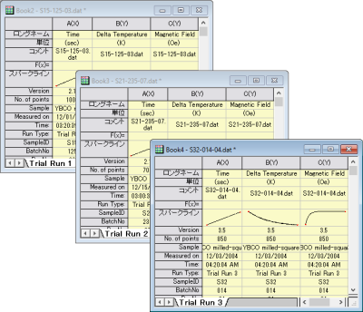
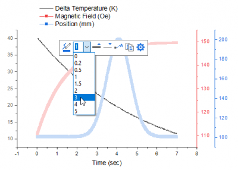

グラフテンプレートとバッチ作図
GSB-template-theme-batchplotting
このチュートリアルでは、グラフテンプレートとバッチ作図について学習します。
グラフテンプレート
レッスン1：初めてのグラフ作成 で保存したプロジェクトを使用します。グラフウィンドウをクリックして選択します。
 | ファイル：最近使ったプロジェクト リストから、最近保存したプロジェクトをすぐに開くことが出来ます。
|
- X軸上でクリックして、ミニツールバーを表示させます。反対側の軸を表示ボタンをクリックし、上X軸を表示します。Y軸に対しても同じ操作を行い、右側のY軸を表示します。
- グラフをテンプレートとして保存します。ウィンドウのタイトルバーを右クリックして、メニューからテンプレートの新規保存…を選択します。
- ダイアログが開いたら テンプレート名 に My Line と入力し、OK をクリックしてテンプレートを保存します。
- 新しいデータ列を作成します。ワークシートをアクティブにして、標準ツールバーの列の追加ボタン
 をクリックして、新しい列を追加します。
をクリックして、新しい列を追加します。
- この新しい列のF(x)セルの内側をクリックし、次のように入力します。
=Mmovavg(B,2)
「=」と入力してから式を入力すると、使用可能な式が一覧表示され、式の自動補完を選択できるようになります。メッセージボックスがポップアップ表示され、式の簡単な説明が表示されます。
| この列のF(x)セルを右クリックしてコンテキストメニューからダイアログを開く…を選択します。
このダイアログでは、計算式：サンプルのロードメニューを使用することで、列値の設定に関するさまざまな例を表示します。また、関数メニューには、さまざまな関数が用意されています。関数の検索と挿入ボタンを使用して適切な関数を検索することもできます。
|
- OKをクリックしてダイアログを閉じ、B列データの修正移動平均のデータセットを2行目以降に出力します。この列のロングネームセルにMMovAvgと入力します。
- 列Cのヘッダをクリックして列全体を選択します。メニューから作図：ユーザーテンプレートを選択し、前に作成したMy Lineテンプレートを選択します。C列のデータで、新しいグラフが作成されます。

バッチ作図
このセクションでは、最初に一つのグラフを作成した後、バッチ作図を行い、さらに他のデータでグラフを複製します。
- プロジェクトエクスプローラを開きます。上部のパネルで、ルートレベルを右クリックし、新規フォルダを選択します。
- 新しく作成されたフォルダを右クリックし、 名前の変更を選択して名前をバッチ作図に変更します。フォルダをクリックして開きます。
- ヘルプ: フォルダを開く: プログラムフォルダを選択して、Originのプログラムフォルダを開き、\Samples\Import and Export\ サブフォルダを開きます。Shift キーを押しながら、次の3つのファイルを選択します。
- Originワークシートにドラッグアンドドロップします。3つのファイルがそれぞれ別の新規ワークブックにインポートされます。

- 1つのワークブックを選択し、B列のヘッダ部分でクリックしたら、D列までドラッグし、3つの列を全て選択します。次に、作図：複数区分/軸：3Y軸Y-YYメニューを選択します。
| Originは、選択範囲の左側を見てX列を見つけ、その列に対して選択したデータをプロットします。
|
- 1つのプロットをクリックし、ミニツールバーで、プロットを変更を選択してドロップダウンリストから、プロットタイプを折れ線に変更します。
再度プロットをクリックし、ミニツールバーで、線の太さ を選択してドロップダウンリストから太さを3に変更します。
を選択してドロップダウンリストから太さを3に変更します。

他の2つのプロットについても同じことを行い、次のような折れ線グラフを作成します。

- では、このグラフをほかのワークブックのデータで複製します。グラフのタイトルバーを右クリックして、バッチ作図…を選択し、ワークシートを選択ダイアログを開きます。
- ダイアログで、下図のように設定します。ブックを選択していることを確認します。
| プロット列の一致条件ドロップダウンを適切に設定することにより、現在のグラフのデータ構成に一致するプロジェクト内のワークシートを検索できます。
|
- OKをクリックします。再スケールに関して確認メッセージが表示されたら、はいを選択します。他の2つのブックのデータから、同様の2つのグラフが作成されます。

- メニューから標準ツールバーのプロジェクトを保存ボタンをクリックして、変更したプロジェクトを保存します。